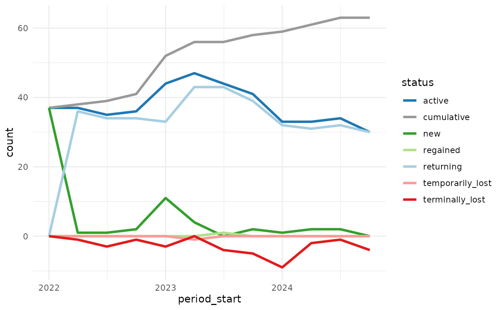
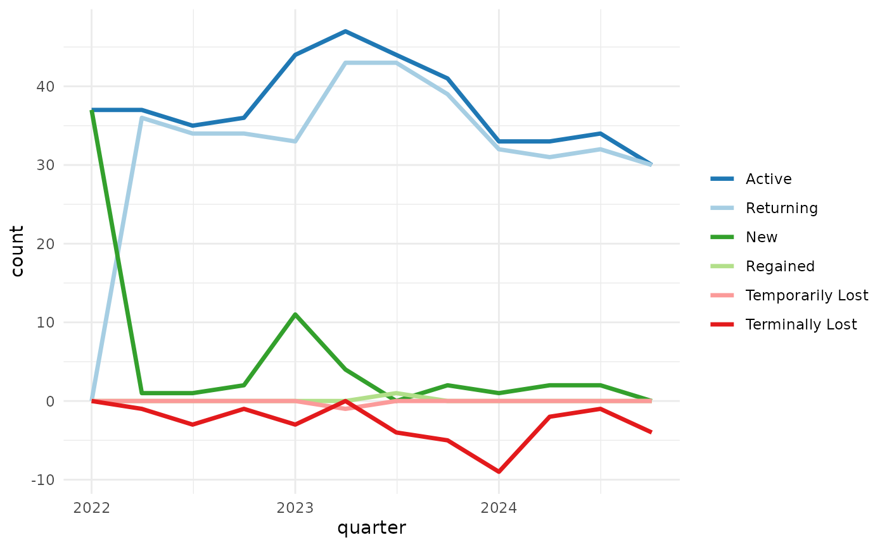
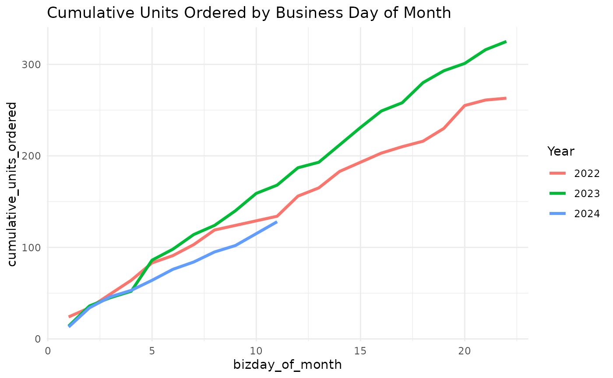
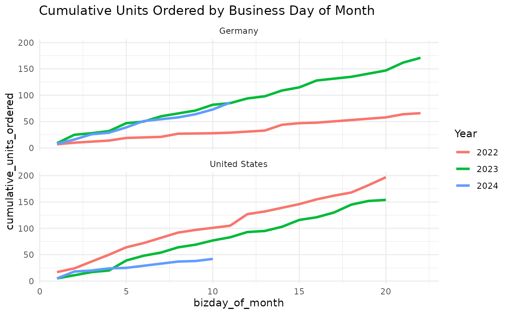
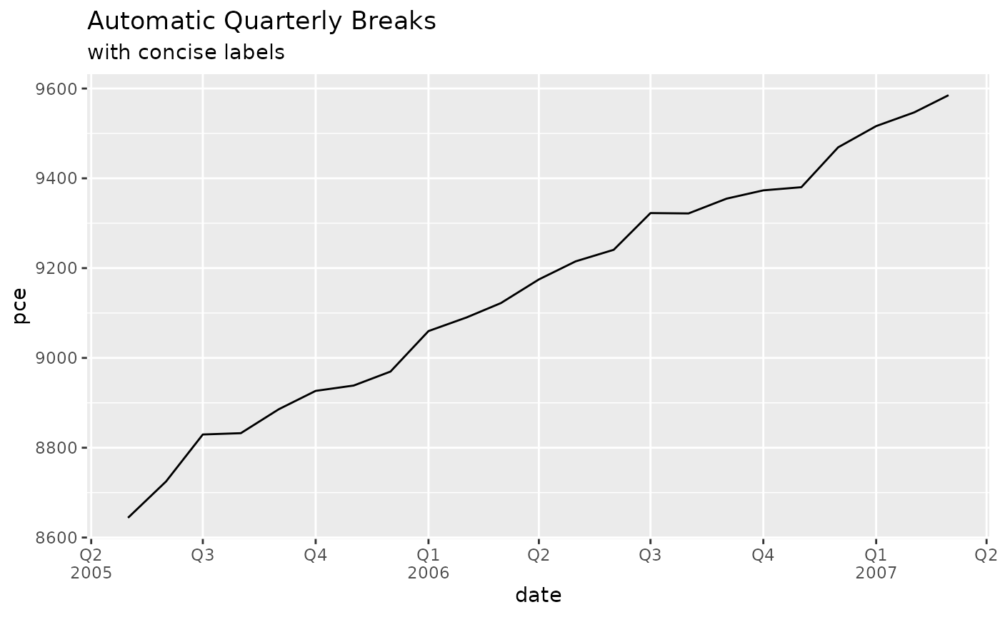
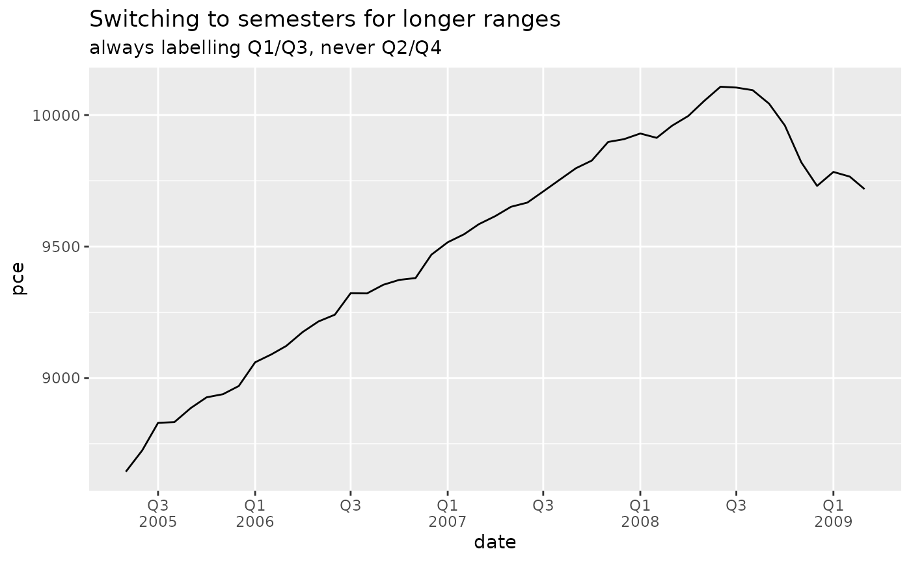
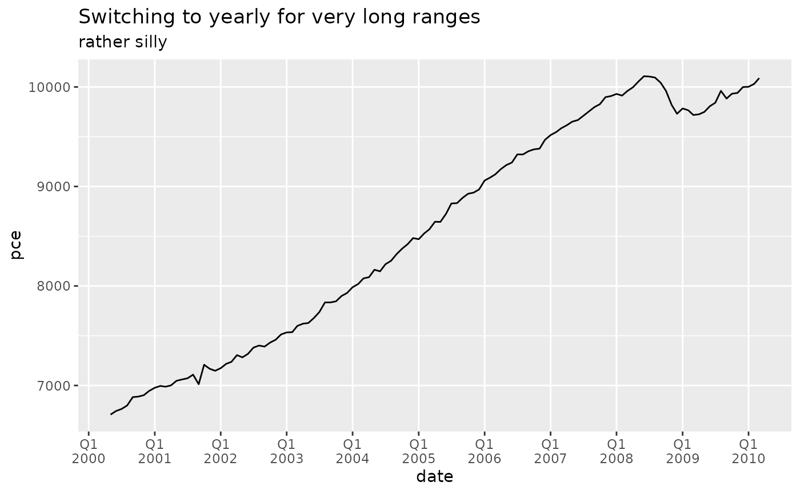
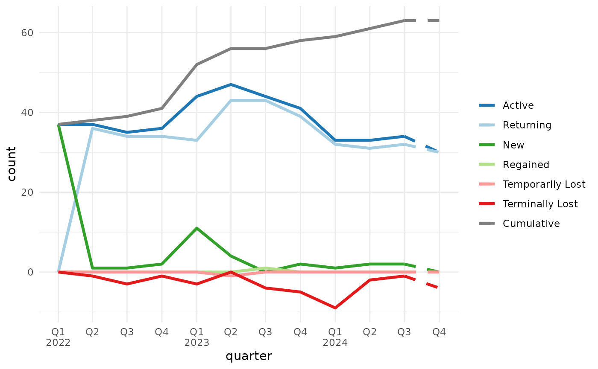

Introduction
The goal of mcrutils is to provide a grab-bag of utility
functions that I find useful in my own R projects for data cleaning,
analysis, and reporting, including creating and visualizing year-to-date
and quarterly analyses, and customer account status/churn analysis.
Cleaning
Normalize logical columns
For data frames or tibbles that have character or factor columns
storing logical data, as may happen when reading from a database, CSV,
or Excel file, use normalize_logicals() to find and convert
these columns to logical type. This is a nice one-liner in a
dplyr pipe
library(dplyr, warn.conflicts = FALSE)
ugly_data <- tibble(
logical_char = c("T", "F", "T"),
logical_factor = factor(c("TRUE", "FALSE", "TRUE")),
non_logical_char = c("a", "b", "c"),
non_logical_factor = factor(c("x", "y", "z")),
mixed_char = c("T", "F", "a"),
mixed_factor = factor(c("TRUE", "FALSE", "x")),
numeric_col = c(1.1, 2.2, 3.3)
)
ugly_data
#> # A tibble: 3 × 7
#> logical_char logical_factor non_logical_char non_logical_factor mixed_char
#> <chr> <fct> <chr> <fct> <chr>
#> 1 T TRUE a x T
#> 2 F FALSE b y F
#> 3 T TRUE c z a
#> # ℹ 2 more variables: mixed_factor <fct>, numeric_col <dbl>
df <- ugly_data |> normalize_logicals()
#> Converted "logical_char" and "logical_factor" columns to
#> logical.
df
#> # A tibble: 3 × 7
#> logical_char logical_factor non_logical_char non_logical_factor mixed_char
#> <lgl> <lgl> <chr> <fct> <chr>
#> 1 TRUE TRUE a x T
#> 2 FALSE FALSE b y F
#> 3 TRUE TRUE c z a
#> # ℹ 2 more variables: mixed_factor <fct>, numeric_col <dbl>Analysis
Customer account status, churn, and retention
accounts_by_status() categorizes accounts into statuses
based on their order activity (active, new, returning, temporarily lost,
regained and terminally lost) in each time interval (monthly, weekly,
quarterly, etc. are supported). It also produces a running list of
cumulative accounts. This is useful for understanding customer retention
and churn.
The data.frame returned by
accounts_by_status() quickly gets unwieldy to print, so to
see how it works, let’s make a small example data set with a list of 25
orders from 10 accounts over 6 months.
set.seed(1234)
n <- 25
dates <- seq(as.Date("2022-01-01"), as.Date("2022-06-30"), by = "day")
orders <- data.frame(
account_id = sample(letters[1:10], n, replace = TRUE),
order_date = sample(dates, n, replace = TRUE)
) |> arrange(order_date)
orders |> glimpse()
#> Rows: 25
#> Columns: 2
#> $ account_id <chr> "h", "b", "b", "f", "d", "i", "e", "c", "d", "d", "j", "f",…
#> $ order_date <date> 2022-01-02, 2022-01-26, 2022-02-10, 2022-02-11, 2022-02-12…accounts_by_status() splits the order data by time
periods, and returns the accounts in each status category for each
period as a list-column.
orders |> accounts_by_status(account_id, order_date, by = "month")
#> period_start period_end active new returning
#> 1 2022-01-01 2022-01-31 b, h b, h
#> 2 2022-02-01 2022-02-28 b, c, d, e, f, i, j c, d, e, f, i, j b
#> 3 2022-03-01 2022-03-31 d, f d, f
#> 4 2022-04-01 2022-04-30 d, e, g, h g d
#> 5 2022-05-01 2022-05-31 e, f, h e, h
#> 6 2022-06-01 2022-06-30 f, j f
#> regained temporarily_lost terminally_lost cumulative
#> 1 b, h
#> 2 h b, h, c, d, e, f, i, j
#> 3 e, j b, c, i b, h, c, d, e, f, i, j
#> 4 e, h f b, h, c, d, e, f, i, j, g
#> 5 f d, g b, h, c, d, e, f, i, j, g
#> 6 j e, h b, h, c, d, e, f, i, j, gIf you want the count of accounts in each status category, set
with_counts = TRUE (the lists of account_ids are still
included, we just omit them from the printed output here).
orders |>
accounts_by_status(account_id, order_date, by = "month", with_counts = TRUE) |>
select(period_start, starts_with("n_"))
#> period_start n_active n_new n_returning n_regained n_temporarily_lost
#> 1 2022-01-01 2 2 0 0 0
#> 2 2022-02-01 7 6 1 0 1
#> 3 2022-03-01 2 0 2 0 2
#> 4 2022-04-01 4 1 1 2 1
#> 5 2022-05-01 3 0 2 1 0
#> 6 2022-06-01 2 0 1 1 0
#> n_terminally_lost n_cumulative
#> 1 0 2
#> 2 0 8
#> 3 3 8
#> 4 0 9
#> 5 2 9
#> 6 2 9Visualizing the count of accounts in each status over time can be helpful to understand how the business is doing in terms of customer retention and churn.
mcrutils includes a larger example dataset
example_sales with about 5000 orders between accounts over
in the 2022–2024 time period.
example_sales |> glimpse()
#> Rows: 5,317
#> Columns: 4
#> $ account_id <chr> "l_10", "l_11", "l_20", "l_9", "l_1", "l_1", "l_18", "l_…
#> $ market <chr> "Germany", "Germany", "United States", "United States", …
#> $ order_date <date> 2022-01-02, 2022-01-03, 2022-01-03, 2022-01-03, 2022-01…
#> $ units_ordered <dbl> 1, 4, 2, 1, 3, 2, 2, 2, 1, 2, 3, 2, 2, 2, 2, 4, 4, 3, 1,…accounts_by_status() produces six status counts, plus
one cumulative count– that’s up to seven data series to plot, so we need
to be thoughtful about design choices.
Showing the lost accounts as a negative value helps de-clutter the picture and helps perception by encoding values above the axis as “good” and below as “bad” (assuming we don’t want to lose customers). We can use color to help as well (blues/greens: good, reds: bad).
library(ggplot2)
library(dplyr, warn.conflicts = FALSE)
library(tidyr)
example_sales |>
accounts_by_status(account_id, order_date, with_counts = TRUE, by = "quarter") |>
select(period_start, starts_with("n_")) |>
# negate the lost counts for visualization
mutate(across(contains("lost"), ~ -.x)) |>
# pivot to prepare for ggplot
pivot_longer(starts_with("n_"), names_to = "status", values_to = "count") |>
mutate(status = stringr::str_remove(status, "n_")) |>
ggplot(aes(period_start, count, color = status)) +
geom_line(linewidth = 1.2) +
scale_color_manual(values = c(
"active" = "#1f78b4",
"new" = "#33a02c",
"returning" = "#a6cee3",
"temporarily_lost" = "#fb9a99",
"terminally_lost" = "#e31a1c",
"regained" = "#b2df8a",
"cumulative" = "#999999"
)) +
theme_minimal()
plot_accounts_by_status() is a convenience function that
does the above and a bit more, cleaning up the legend, x-axis title, and
if the last order_date is before the end of the final time period (as in
example_sales, which has no orders after 2024-12-20), the
final period will be shown with dashed lines to indicate that the data
may be incomplete.
example_sales |>
plot_accounts_by_status(account_id, order_date, by = "quarter")
You can suppress the dashed lines for incomplete periods with with
force_final_period_complete = TRUE, and exclude the
cumulative line with include_cumulative = FALSE.
example_sales |>
plot_accounts_by_status(
account_id, order_date,
by = "quarter",
force_final_period_complete = TRUE,
include_cumulative = FALSE
)
Business day evaluation
mcrutils provides several functions for working with
business days, including is_bizday(),
adjust_to_bizday(), bizdays_between(),
periodic_bizdays(), and
bizday_of_period().
These functions use calendars from QuantLib for working/non-working
day definitions, and they are all based on the qlcal
package. In fact, with the exception of periodic_bizdays(),
there are corresponding functions in qlcal.
The motivation for the mcrutils versions was to
facilitate frequent changes to the configured QuantLib calendar without
making persistent changes to the globally configured calendar,i.e. these
functions contain the calendar change to their own functional scope.
This functionality leverages withr.
mcrutils also provides with_calendar() and
local_calendar() functions so you can leverage this
side-effect encapsulation for other qlcal use cases.
Business days in periodic intervals
periodic_bizdays() calculates the number of business
days in each periodic interval (e.g., monthly, quarterly) between two
dates, using calendars from QuantLib for holiday definitions.
periodic_bizdays(
from = "2025-01-01",
to = "2025-12-31",
by = "quarter",
quantlib_calendars = c("UnitedStates", "UnitedKingdom")
)
#> # A tibble: 8 × 4
#> calendar start end business_days
#> <chr> <date> <date> <int>
#> 1 UnitedStates 2025-01-01 2025-03-31 61
#> 2 UnitedStates 2025-04-01 2025-06-30 63
#> 3 UnitedStates 2025-07-01 2025-09-30 64
#> 4 UnitedStates 2025-10-01 2025-12-31 62
#> 5 UnitedKingdom 2025-01-01 2025-03-31 63
#> 6 UnitedKingdom 2025-04-01 2025-06-30 61
#> 7 UnitedKingdom 2025-07-01 2025-09-30 65
#> 8 UnitedKingdom 2025-10-01 2025-12-31 64Cumulative daily sales by business day of period
bizday_of_period() calculates the business day of the
period (month, quarter, or year) for a given date and calendar e.g. date
x is the 3rd business day of the month.
This can be helpful in creating an apples-to-apples “burn-up” chart showing cumulative orders, revenue, etc through the period vs. a similar period in a prior year.
When there are multiple records per day, it’s generally faster to create a lookup table from date to business day of period, and then join that to your data frame.
Using the example_sales dataset, first we add a column
with the QuantLib calendar to be used for each order (in this case the
market column is close, we just need to eliminate the space in “United
States”).
library(dplyr, warn.conflicts = FALSE)
library(lubridate, warn.conflicts = FALSE)
library(purrr)
library(stringr)
sales <- example_sales |>
mutate(calendar = str_replace_all(market, " ", ""))
head(sales)
#> # A tibble: 6 × 5
#> account_id market order_date units_ordered calendar
#> <chr> <chr> <date> <dbl> <chr>
#> 1 l_10 Germany 2022-01-02 1 Germany
#> 2 l_11 Germany 2022-01-03 4 Germany
#> 3 l_20 United States 2022-01-03 2 UnitedStates
#> 4 l_9 United States 2022-01-03 1 UnitedStates
#> 5 l_1 Germany 2022-01-04 3 Germany
#> 6 l_1 Germany 2022-01-04 2 GermanyNow we can make a lookup table covering the years and markets in our data set.
bizday_lookup <- tibble(
# make a row for each date in the years spanned by the sales data
date = seq(
from = lubridate::floor_date(min(sales$order_date), "month"),
to = lubridate::ceiling_date(max(sales$order_date), "month") - 1,
by = "day"
)
) |>
# cross with each calendar
tidyr::expand_grid(calendar = unique(sales$calendar)) |>
mutate(
adjusted_date = purrr::map2_vec(
.data$date, .data$calendar,
\(date, calendar) adjust_to_bizday(date, calendar)
),
# calculate the business day of month for each date in each market
bizday_of_month = purrr::pmap_int(
list(adjusted_date, .data$calendar),
\(date, calendar) {
bizday_of_period(date, calendar, period = "month")
}
),
# and again for the business day of quarter
bizday_of_quarter = purrr::pmap_int(
list(adjusted_date, .data$calendar),
\(date, calendar) {
bizday_of_period(date, calendar, period = "quarter")
}
)
)
# peek at the result
bizday_lookup |>
filter(date >= ymd("2023-07-02")) |> # starting on a Sunday in July
head()
#> # A tibble: 6 × 5
#> date calendar adjusted_date bizday_of_month bizday_of_quarter
#> <date> <chr> <date> <int> <int>
#> 1 2023-07-02 Germany 2023-07-03 1 1
#> 2 2023-07-02 UnitedStates 2023-07-03 1 1
#> 3 2023-07-03 Germany 2023-07-03 1 1
#> 4 2023-07-03 UnitedStates 2023-07-03 1 1
#> 5 2023-07-04 Germany 2023-07-04 2 2
#> 6 2023-07-04 UnitedStates 2023-07-05 2 2Now we can join the lookup table to the sales data.
sales_with_bizday <- sales |>
left_join(bizday_lookup, by = c("order_date" = "date", "calendar" = "calendar"))
head(sales_with_bizday)
#> # A tibble: 6 × 8
#> account_id market order_date units_ordered calendar adjusted_date
#> <chr> <chr> <date> <dbl> <chr> <date>
#> 1 l_10 Germany 2022-01-02 1 Germany 2022-01-03
#> 2 l_11 Germany 2022-01-03 4 Germany 2022-01-03
#> 3 l_20 United States 2022-01-03 2 UnitedStates 2022-01-03
#> 4 l_9 United States 2022-01-03 1 UnitedStates 2022-01-03
#> 5 l_1 Germany 2022-01-04 3 Germany 2022-01-04
#> 6 l_1 Germany 2022-01-04 2 Germany 2022-01-04
#> # ℹ 2 more variables: bizday_of_month <int>, bizday_of_quarter <int>Let’s imagine it’s mid-November 2024, and we want to see how orders are tracking against the prior year.
First we group by the year and business day of month, then calculate daily units ordered and the cumulative sum of units ordered
global_cum_daily_sales <- sales_with_bizday |>
filter(order_date < ymd("2024-11-18")) |>
filter(month(adjusted_date) == 11) |>
group_by(year = year(adjusted_date), bizday_of_month) |>
summarise(units_ordered = sum(units_ordered), .groups = "drop") |>
group_by(year) |>
mutate(cumulative_units_ordered = cumsum(units_ordered))
head(global_cum_daily_sales)
#> # A tibble: 6 × 4
#> # Groups: year [1]
#> year bizday_of_month units_ordered cumulative_units_ordered
#> <dbl> <int> <dbl> <dbl>
#> 1 2022 1 24 24
#> 2 2022 2 10 34
#> 3 2022 3 15 49
#> 4 2022 4 15 64
#> 5 2022 5 19 83
#> 6 2022 6 8 91Now we can construct a cumulative daily sales chart comparing 2024 to prior years.
global_cum_daily_sales |>
ggplot(aes(bizday_of_month, cumulative_units_ordered, color = factor(year))) +
geom_line(linewidth = 1.2) +
labs(
title = "Cumulative Units Ordered by Business Day of Month",
color = "Year"
) +
theme_minimal()
Or we can look by-market as well, we just need to add another grouping variable for the market, then facet the plot.
regional_cum_daily_sales <- sales_with_bizday |>
filter(order_date < ymd("2024-11-18")) |>
filter(month(order_date) == 11) |>
group_by(year = year(order_date), bizday_of_month, market) |>
summarise(units_ordered = sum(units_ordered), .groups = "drop") |>
group_by(year, market) |>
mutate(cumulative_units_ordered = cumsum(units_ordered))
head(regional_cum_daily_sales)
#> # A tibble: 6 × 5
#> # Groups: year, market [2]
#> year bizday_of_month market units_ordered cumulative_units_ordered
#> <dbl> <int> <chr> <dbl> <dbl>
#> 1 2022 1 Germany 7 7
#> 2 2022 1 United States 17 17
#> 3 2022 2 Germany 3 10
#> 4 2022 2 United States 7 24
#> 5 2022 3 Germany 2 12
#> 6 2022 3 United States 13 37
regional_cum_daily_sales |>
ggplot(aes(bizday_of_month, cumulative_units_ordered, color = factor(year))) +
geom_line(linewidth = 1.2) +
facet_wrap(~market, ncol=1) +
labs(
title = "Cumulative Units Ordered by Business Day of Month",
color = "Year"
) +
theme_minimal()
Year-to-date helpers
mcrutils provides a handful functions that can be
helpful in creating year-to-date analyses
Below we have 2.5 years of historical sales data ending on June 1, 2025.
set.seed(123)
sales <- tibble(
date = seq(
from = as.Date("2023-01-01"),
to = as.Date("2025-06-01"),
by = "month"
),
amount = rpois(30, lambda = 100)
)
head(sales)
#> # A tibble: 6 × 2
#> date amount
#> <date> <int>
#> 1 2023-01-01 94
#> 2 2023-02-01 111
#> 3 2023-03-01 83
#> 4 2023-04-01 101
#> 5 2023-05-01 117
#> 6 2023-06-01 104ytd_bounds() gets the start and end of the year-to-date
period for the latest year in a vector of dates,
(bounds <- ytd_bounds(sales$date))
#> [1] "2025-01-01" "2025-06-01"and is_ytd_comparable() is a logical vector that
indicates whether the dates in a vector are within a year-to-date period
relative to a given end_date.
So we can quickly filter the historical data to see how we’re doing in 2025 compared to the same period (i.e. January - June) in 2023 and 2024:
sales |>
filter(is_ytd_comparable(date, max(bounds))) |>
group_by(year = lubridate::year(date)) |>
summarise(ytd_sales = sum(amount))
#> # A tibble: 3 × 2
#> year ytd_sales
#> <dbl> <int>
#> 1 2023 610
#> 2 2024 594
#> 3 2025 600With py_dates() you can rollback a vector of dates to
the same period in the previous year, moving any fictitious dates to the
prior valid day.
Visualization
Auto-formatted datattables
auto_dt() uses guess_col_fmts() to
determine the format of each column. You can provide
pct_flags and curr_flags (character vectors)
if you need to control the list of “signal” words that indicate a column
is a percentage or currency.
You can suppress the buttons for copy, csv, and excel downloads with
buttons = FALSE.
tribble(
~product, ~weight, ~dollaz_earned, ~growth_pct,
"Widget A", 13.53, 1023.21, 0.051,
"Widget B", 22.61, 150.24, 0.103,
"Widget C", 40.54, 502.26, 0.021,
"Widget D", 34.21, 2000.95, 0.154
) |>
mutate(product = as.factor(product)) |>
auto_dt(numeric_digits = 1, pct_digits = 0, curr_flags = c("revenue", "dollaz"))Quarterly breaks and labels
scales::label_date_short() is a great function for
labeling dates in ggplot2, but unfortunately it can’t
support quarterly breaks and labels out of the box.
mcrutils provides a set of functions to create quarterly
breaks and labels for date scales in ggplot2. The
breaks_quarters() function generates breaks for quarters,
and label_quarters_short() generates minimal labels for
these breaks in a two-line format (like
scales::label_date_short()), labeling every quarter, but
only including the year when it changes from the previous label.
library(ggplot2)
economics |>
filter(date >= "2005-05-01", date <= "2007-03-01") |>
ggplot(aes(date, pce)) +
geom_line() +
scale_x_date(
breaks = breaks_quarters(),
labels = label_quarters_short()
) +
labs(
title = "Automatic Quarterly Breaks",
subtitle = "with concise labels"
) +
theme(panel.grid.minor.x = element_blank())
The automatic version of breaks_quarters() tries to
return a reasonable number of breaks over a wide range of dates,
down-sampling to semesters and years as needed.
economics |>
filter(date >= "2005-05-01", date <= "2009-03-01") |>
ggplot(aes(date, pce)) +
geom_line() +
scale_x_date(
breaks = breaks_quarters(),
labels = label_quarters_short()
) +
labs(
title = "Switching to semesters for longer ranges",
subtitle = "always labelling Q1/Q3, never Q2/Q4"
) +
theme(panel.grid.minor.x = element_blank())
economics |>
filter(date >= "2000-05-01", date <= "2010-03-01") |>
ggplot(aes(date, pce)) +
geom_line() +
scale_x_date(
breaks = breaks_quarters(),
labels = label_quarters_short()
) +
labs(
title = "Switching to yearly for very long ranges",
subtitle = "rather silly"
) +
theme(panel.grid.minor.x = element_blank())
With very long date ranges like this, you are likely better off
switching from these quarterly functions to the more standard date
breaks and labels in ggplot2.
You can force a fixed break width if quarters are desired regardless of the date range.
example_sales |>
plot_accounts_by_status(account_id, order_date, by = "quarter") +
scale_x_date(
breaks = breaks_quarters(width = "1 quarter"),
labels = label_quarters_short()
) +
theme(panel.grid.minor.x = element_blank())